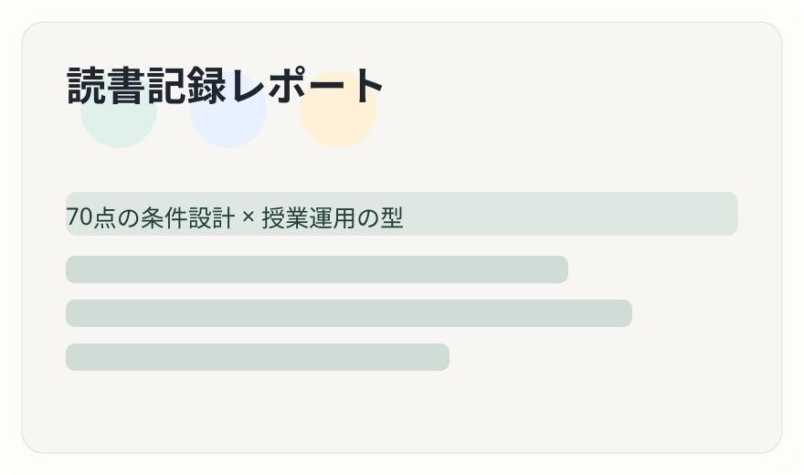

タイプ1：計画絶対視
年間計画を守ることが目的化し、教師主導・時間不足に陥る。
このページは、同僚教員向けに「本書の実践的エッセンス」を1ページで共有するLPです。総合を難しくしすぎず、70点を安定して出す設計と授業運用の型に焦点化しました。

総合を「一部の名人教師の授業」にしないこと。理想の完璧実装より、誰でも回せる運用骨格を先に整えることで、実践格差・固定化・形骸化を防ぐ。
年間計画を守ることが目的化し、教師主導・時間不足に陥る。
時期が来ると一斉準備。問いや評価軸より段取りが優先される。
地域交流の再交渉コストが重く、前例踏襲に流れやすい。
目標との接続が弱く「活動はあるが学びが薄い」状態になる。
毎時間の出口を「まとめ → 見通し → 振り返り」で固定。授業冒頭は“確認”から入り、次の行動を児童が言語化できる状態をつくる。
地域価値の再発見と伝達。意味づけまで設計して終える。
地域課題への実践。開始前に「小学生が実行可能なこと」を調査。
好き・作りたいから出発し、助言と改善で質を高めて表現へ。
「とりあえず調べる」はNG。体験→気づき共有→調べる目的の言語化→情報収集へ。探究は常に拡散と収束の往還として設計する。
思考ツールは万能ではない。順序付け・比較・分類・関連付け・多面的多角的・理由付け・見通し・具体化・抽象化・構造化という狙う思考スキルとセットで使う。
評価を「指導に生かす評価」と「記録に残す評価」に分ける。集団活動で埋もれる個を見取るために、所見根拠は単元途中から観察・記録する。
端末活用は「代替→目的化→目的達成のための吟味」の段階で捉える。総合では特に、探究過程のどこで何のために使うかを先に決める。
総合は問い設計・まとめの明確化・見立て・問い返し・柔軟な見取りを鍛える。教科で育った専門性と総合の往還が、学校全体の授業力を押し上げる。
中心に「70点条件設計」。内側リング：計画・必須/自由枠・毎時の型。中間リング：拡散収束・思考スキル/ツール・落とし穴。外側リング：単元3類型・評価二分・端末段階・教科往還。
総合を難しくすると、教師の挑戦が減り、学びの格差が増える。
計画は緻密に作るが、緻密さは共通理解のために使う。
主体性は放任ではなく、合意と更新で育つ。
調べる前に、何のために調べるかを共有する。
広がっただけでは深まらない。深まりは収束で生まれる。
思考ツールは道具であり、狙う思考が先にある。
活動があるのに学びがないとき、欠けているのは問いと評価の軸である。
総合は教科を越える時間ではなく、教科を鍛え直す時間でもある。
端末は便利だが、目的が曖昧なら学びを薄くする。
70点を安定させると、次の一歩を踏み出す余力が生まれる。